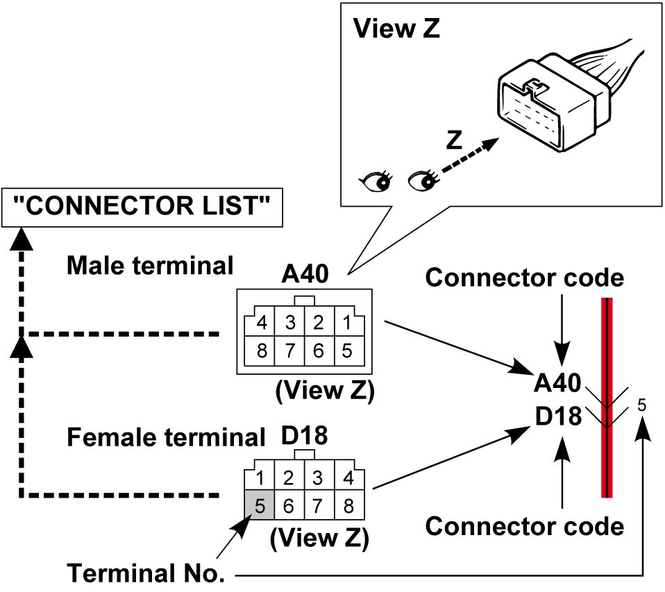
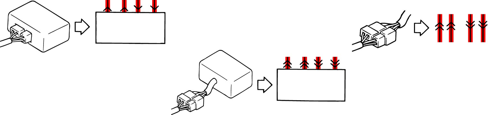
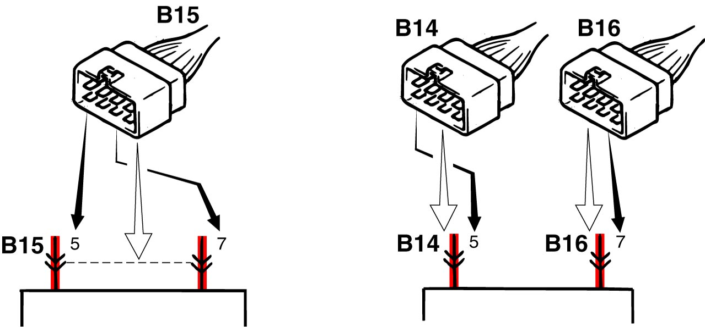
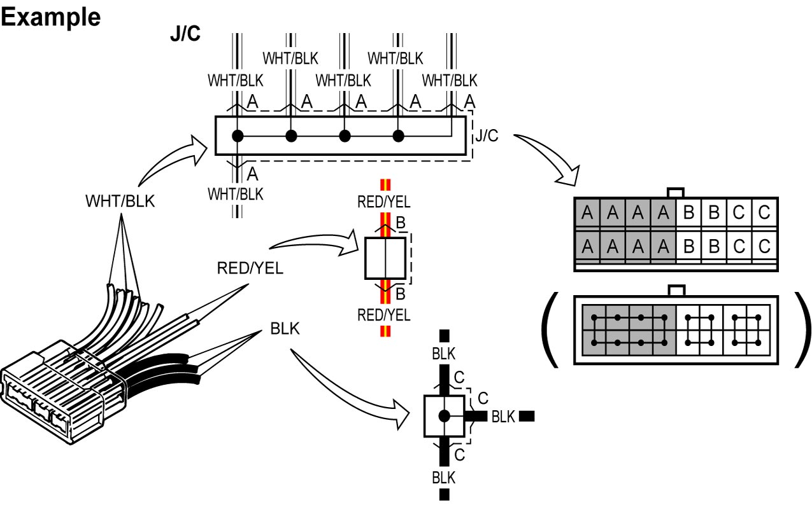
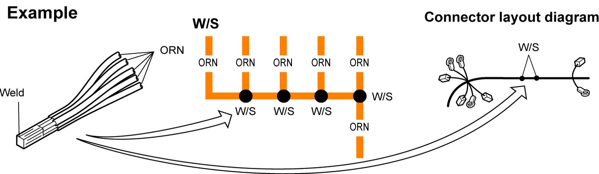
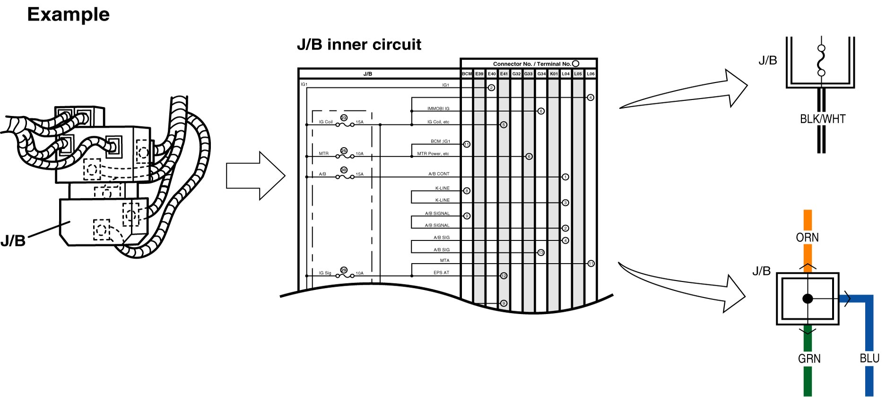
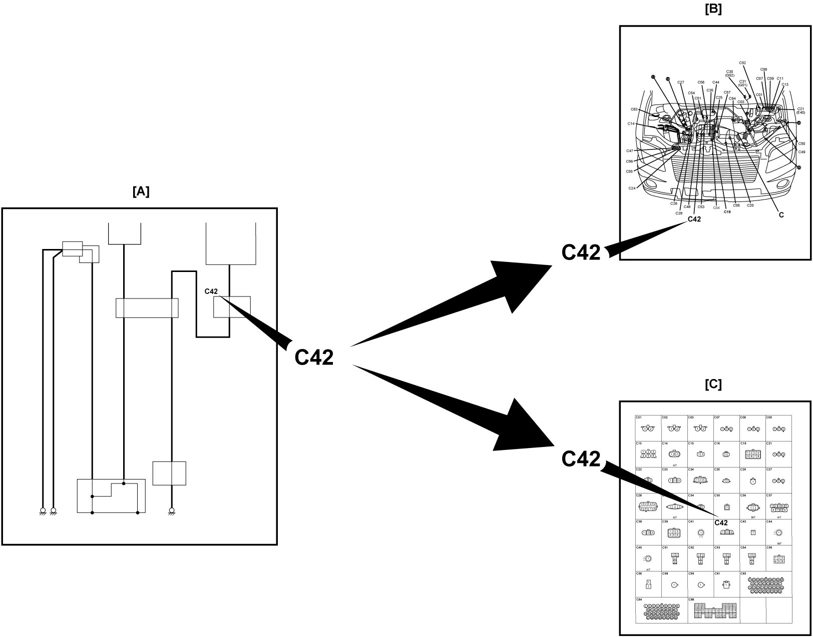

9A
| How to Read Connector Codes and Terminal Nos. |
1)Connector code/Terminal No./Terminal layout
•The connector shape and terminal layout shown in this manual are those viewed from “Z” in the illustration.
Refer to List of Connectors.

Refer to List of Connectors.

 "Expand image")
NOTE:
Molded terminal numbers that are different from the above can be found on some connectors in rare cases.
These molded numbers are not applied in this manual.
2)Connector type

 "Expand image")
3)Terminals in one connector (Broken line) (B15) / Terminals in different connectors (B14, B16)

 "Expand image")
4)Joint connector (J/C)
•The joint connector (J/C) connects several different wires with the same wire color at one place instead of connecting them by welding or caulking one by one. It is not an ordinary connector but a part of the continuous wire in the harness.

 "Expand image")
5)Weld splice (W/S)
•Several different wires with the same wire color are joined by welding at a W/S.

 "Expand image")
6)Junction block (J/B)

 "Expand image")
7)Connector location, shape and terminal No.
Refer to Connector Layout Diagram.
Refer to System Circuit Diagram.
Refer to List of Connectors.
Referring to connector code in System Circuit Diagram [A], location of the connector, connector shape and terminal layout can be found respectively.
Refer to Connector Layout Diagram.
Refer to System Circuit Diagram.
Refer to List of Connectors.
Referring to connector code in System Circuit Diagram [A], location of the connector, connector shape and terminal layout can be found respectively.
•When checking connector location
Referring to connector code in Connector Layout Diagram [B], location of the connector can be found.
•When checking connector shape and terminal layout
Referring to connector code and the terminal No. in List of Connector [C], the connector shape and terminal layout in the connector can be found.
Referring to connector code in Connector Layout Diagram [B], location of the connector can be found.
•When checking connector shape and terminal layout
Referring to connector code and the terminal No. in List of Connector [C], the connector shape and terminal layout in the connector can be found.
| System Circuit Diagram | Connector code and terminal No. are shown in each “System Circuit Diagram”. Using the connector code and terminal No., location of the connector, connector shape and terminal layout concerned can be found in the applicable “Connector Layout Diagram” and “List of Connector”. |
| Connector Layout Diagram | Checking objective connector code in the applicable “System Circuit Diagram”, location of the connector can be found in the applicable “Connector Layout Diagram”. |
| List of Connector | Checking objective connector code and terminal No. in the applicable “System Circuit Diagram”, the connector shape and terminal layout can be found in the applicable “List of Connector”. |

 "Expand image")